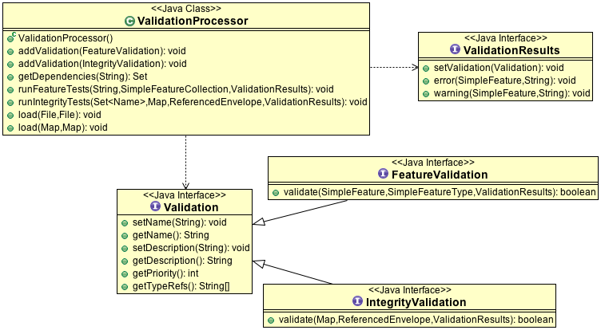

Validation¶
The gt-validation module provides a framework for defining data quality constraints in the form of a validation framework. This allows an application to define constraints based on business rules, along with code to help check these constraints prior to commit being called.
Similar in practice to traditional database integrity checks, the module works across datastore boundaries and specific to the geospatial domain. Were possible the naming and feature set has been brought in line with commercial offerings to ease migration.
References:
- http://vwfs.refractions.net/
- http://vwfs.refractions.net/docs/Plugin_API.pdf
- http://vwfs.refractions.net/docs/Validation_Language.pdf
Maven:
<dependency>
<groupId>org.geotools</groupId>
<artifactId>gt-validation</artifactId>
<version>${geotools.version}</version>
</dependency>
ValidationProcessor¶
ValidationProcessor is software component offered by gt-validation extension.
One thing you will notice is that this is a full extension built on top of the GeoTools library. As a result ValidationProcessor is is a ready to use software component with its own file formats and so forth.
It is not trying to implement any standards in order to integrate with your your existing infrastructure; it is up to you to host a Repository allowing the ValidationProcessor to access your organisations data.
The key concepts offered by the Validation Processor are:
- ValidationProcessor - this is the validation engine responsible for running tests against your data.
- ValidationResults - this is a class you provide that will be called as each error or warning is found.
- Validation - definition of a test to be performed.
- FeatureValidation - test is performed on a feature by feature basis
- IntegrityValidation - test is performed between two FeatureSources
The design of the ValidationProcessor is similar in spirit to JUnit tests; a “test results” object is passed in and used to collect information about the running tests. As this class is provided by your application you can hook these results up to the screen for display; or write out a log file or take other appropriate action.
Configuration¶
THe ValidationProcessor is configured using:
plugin configuration: plugins are defined using a combination of xml and an implementing Java class. This configuration can be reused between applications; and are aligned with your organisation data quality policies.
Here is an example:
<?xml version="1.0" encoding="UTF-8"?> <plugin xmlns="pluginSchema" xmlns:gml="http://www.opengis.net/gml" xmlns:ogc="http://www.opengis.net/ogc" xmlns:xs="http://www.w3.org/2001/XMLSchema-instance" xs:schemaLocation="pluginSchema /data/capabilities/validate/pluginSchema.xsd"> <name>Is Valid Geometry</name> <description>Is this a valid GML geometry for geoserver.</description> <class>org.geotools.validation.spatial.IsValidGeometryValidation</class> </plugin>This xml file defines the test Is Valid Geometry, this definition is backed by the implementation IsValidGeometryValidation.
test configuration: tests defined specific to your data.
Here is an example of a test suite defined for the data set lakes:
<?xml version="1.0" encoding="UTF-8"?> <suite xmlns="testSuiteSchema" xmlns:gml="http://www.opengis.net/gml" xmlns:ogc="http://www.opengis.net/ogc" xmlns:xs="http://www.w3.org/2001/XMLSchema-instance" xs:schemaLocation="testSuiteSchema /data/capabilities/validate/testSuiteSchema.xsd"> <name>Lake Integrity Checks</name> <description>Checks to ensure the lakes are valid</description> <test> <name>Lake Valid</name> <description>Checks that Lakes are represented by valid geometries</description> <plugin>Is Valid Geometry</plugin> <argument > <name>typeRef</name> <string>LAKES:lakes</string> </argument> </test> <test> <name>Stream</name> <description>Stream must not crosss itself (expect on a node)</description> <plugin>Line Not Self Intersection</plugin> <argument> <name>typeRef</name> <string>STREAMS:streams</string> </argument> </test> </suite>This file defines a suite of two tests that will be performed against LAKES.
- One of these is a reference the the Is Valid Geometry plugin defined above. Note that this test is restricted to the typeRef “LAKES:lakes”
- The second test is an integrity test that needs to make reference to another layer (ie typeRef “STREAMS.streams”). The test is defined to prevent lakes and streams being used to describe the same water work.
Feature Validation Example¶
The following example is minimal:
MemoryDataStore store;
store = new MemoryDataStore();
store.addFeatures( roadFeatures );
store.addFeatures( riverFeatures );
//
// SETUP
//
ValidationProcessor processor = new ValidationProcessor();
// normally you load definition from file
// Here we are doing it by hand
IsValidGeometryValidation geom = new IsValidGeometryValidation();
geom.setName( "IsValidGeometry");
geom.setDescription("IsValid geomtry check");
geom.setTypeRef("*"); // works on any feature type
processor.addValidation( geom );
//
// TESTING
//
// Create a ValidationResults callback object to receive
// any warnings or errors
//
// Normally you implement this as a callback to your application;
// here we will use a default implementation here that adds results to a list
DefaultFeatureResults results = new DefaultFeatureResults();
// test a featureCollection
processor.runFeatureTests( "dataStoreId", roadFeatures, results);
// and check the results
System.out.println("Found "+ results.error.size() + " failires" );
Integrity Validation Example¶
The following example is minimal and refers to the configuration above:
// set up a validation processor using two directories of
// configuraiton files
ValidationProcessor processor = new ValidationProcessor();
processor.load( pluginDirectory, testSuiteDirectory );
// normally you load definition from file
// it will load all the files in the provided directories
processor.load( pluginDirectory, testSuiteDirectory );
DefaultFeatureResults results = new DefaultFeatureResults();
// To run integrity tests (that compare several featureSources we need
// to make a Map of FeatureSources.
// the *key* is called the "typeRef" and will be used by test suites
// to refer to look up a featureSource as needed
Map<String,SimpleFeatureSource> map = new HashMap<String,SimpleFeatureSource>();
// register in map so validation processor can find it
map.put( "LAKES:lakes", lakesFeatureSource );
map.put( "STREAMS:streams", streamsFeatureSource );
// optional shortlist of layers to check (these are usually the layers your
// user modified)
Set<Name> check = new HashSet<Name>();
check.add( new NameImpl("LAKES:lakes"));
processor.runIntegrityTests( check, map, null, results);
// and check the results
System.out.println("Found "+ results.error.size() + " failires" );